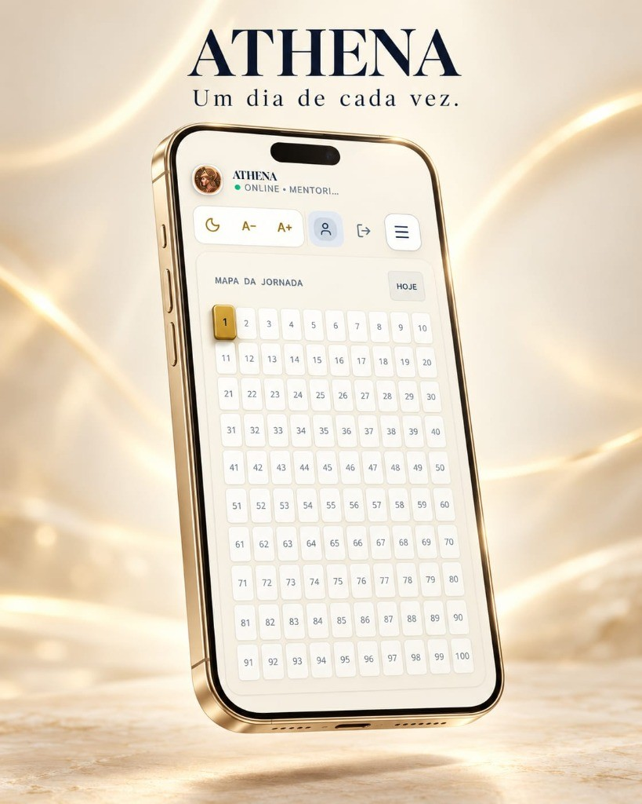
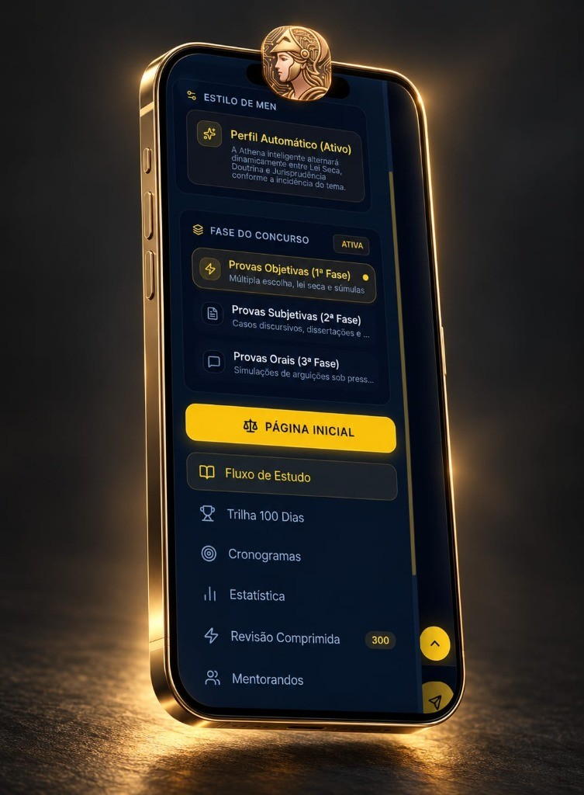

Sua jornada nas carreiras jurídicas começa aqui.
Uma preparação jurídica estruturada em 100 dias, com recursos de inteligência artificial, revisão e questões para concursos de Magistratura e Ministério Público.
✦ Dias 1 e 2 grátis · basta criar sua conta · sem cartão de crédito
Estudar sozinho para concurso jurídico cansa.
E não é falta de esforço. É falta de direção.
Material demais
Leis, súmulas, informativos e doutrina sem uma ordem clara do que estudar primeiro.
Nenhum plano de revisão
O conteúdo estudado na semana passada some quando você mais precisa dele.
Jurisprudência que muda
Teses dos tribunais superiores são atualizadas e é fácil perder o que está sendo cobrado.
A ATHENA organiza sua preparação um dia de cada vez: o que estudar hoje, o que revisar e o que os tribunais estão decidindo.
100 dias. Uma jornada estruturada.
Apresentamos o método ATHENA como uma experiência organizada, permitindo que você acompanhe sua evolução um dia de cada vez.

🗓️ Um dia de cada vez
Cada bloco possui metas claras e delimitadas: legislação, súmulas, teses dos tribunais superiores, doutrina e questões de fixação. Avance sem sobrecarga de cronogramas estáticos.
⚡ Método Pareto 80/20
Foco cirúrgico nos 20% das matérias e teses jurídicas que respondem por 80% das questões das bancas de Magistratura e Ministério Público.
📊 Acompanhamento de evolução
O mapa da jornada de 1 a 100 dias registra visualmente cada conquista, orientando sua rotina e recomendando os próximos passos de forma clara.
Tudo o que você precisa para uma preparação completa
Lei seca, jurisprudência, questões comentadas, revisão ativa e preparação completa por fases do concurso.
⚖️ Lei seca & doutrina dirigida
Artigos e conceitos estruturados com os dispositivos mais cobrados na CF/88, Código Penal, Código de Processo Civil e legislação especial.
🏛️ Jurisprudência com ratio decidendi
Teses vinculantes, súmulas e recursos repetitivos do STF e STJ analisados com fundamentação precisa e contexto prático forense.
🎯 Questões objetivas com justificativa
Simulados diários com gabarito fundamentado item por item, explicando por que cada assertiva está correta ou errada.
🔄 Revisão comprimida & treino por fases
Repetição espaçada com caderno de erros, além de módulos dedicados para Treino de 2ª Fase (subjetiva) e Treino Oral.
Os 6 blocos da rotina de estudos
Cada dia na plataforma é estruturado em 6 etapas complementares para fixação progressiva e retenção duradoura:
Jurisprudência em teses
Análise de julgados paradigmáticos do STF e STJ com ratio decidendi clara e contexto forense.
Fundamentação constitucional
Articulação direta com os dispositivos da Constituição Federal de 1988 e a legislação correlata.
Doutrina majoritária
Síntese das correntes dominantes e distinções conceituais cobradas pelas bancas examinadoras.
Casos práticos forenses
Aplicação da matéria a cenários práticos da atuação judicial e ministerial.
Questões comentadas
Simulados diários de fixação com justificativa jurídica detalhada assertiva por assertiva.
Desafio discursivo & oral
Treinamento de argumentação técnica e resposta oral com critérios de precisão terminológica.
Uma preparação adaptada à sua jornada.
Organize seus estudos de acordo com o seu nível de maturidade e as exigências específicas de cada fase do concurso.

⚙️ Perfil automático ativo
A ATHENA calibra de forma inteligente a proporção entre texto de lei, doutrina e precedentes jurisprudenciais conforme a relevância temática de cada rodada.
⚡ Provas objetivas · 1ª fase
Treinamento intensivo de múltipla escolha com foco na literalidade das normas e na jurisprudência pacificada dos tribunais de cúpula.
📝 Provas subjetivas · 2ª fase
Estruturação de casos discursivos e peças forenses, desenvolvendo a capacidade de fundamentação técnica exigida pelos examinadores.
🎙️ Provas orais · 3ª fase
Simulação de arguições com checagem de postura, vocabulário e domínio dogmático dos institutos jurídicos.
Experimente a metodologia agora
Resolva a questão autoral elaborada pela equipe ATHENA com base no Tema 855/STF e veja o padrão de correção fundamentada:
Com base na Constituição Federal de 1988 e na jurisprudência vinculante do Supremo Tribunal Federal (STF) sobre Direitos Fundamentais, assinale a opção CORRETA:
✓ Gabarito: alternativa B (STF · Tema 855)
Fundamentação (RE 806.339/SE, Tema 855 da repercussão geral, julgado em 15/12/2020): o STF afastou a interpretação que condiciona o exercício do direito de reunião (art. 5º, XVI, da CF) ao aviso prévio: a falta de notificação não torna, por si só, ilegal a manifestação, e a notificação não precisa ser pessoal ou formal. Tese fixada: “A exigência constitucional de aviso prévio relativamente ao direito de reunião é satisfeita com a veiculação de informação que permita ao poder público zelar para que seu exercício se dê de forma pacífica ou para que não frustre outra reunião no mesmo local.”
Resolver mais questões no app →Preparação para os concursos mais exigentes
A mentoria é calibrada nas matrizes curriculares e no nível de profundidade das carreiras jurídicas de ponta:
Magistratura
Juiz de Direito Estadual e Juiz Federal.
Ministério Público
Promotor de Justiça (MPE) e Procurador da República (MPF).
Defensoria Pública
Defensor Público Estadual (DPE) e Federal (DPU).

Conheça a ATHENA gratuitamente.
Crie sua conta, explore os Dias 1 e 2 e descubra uma nova experiência de preparação jurídica de alta performance.
- Acesso total aos Dias 1 e 2 da mentoria diária para conhecer toda a metodologia.
- 6 blocos pedagógicos completos: lei seca, jurisprudência do STF/STJ, doutrina e questões.
- Simulado com correção item a item e justificativa detalhada de cada assertiva.
- Cadastro simplificado: entre com sua conta Google ou e-mail sem precisar de cartão de crédito.
Experimente gratuitamente os Dias 1 e 2 da mentoria ATHENA. Os Dias 3 a 100 integram a assinatura da mentoria completa.
Perguntas frequentes
Como funciona o período de testes gratuito?
A jurisprudência do STF e STJ é realmente atualizada?
O aplicativo funciona em celulares e tablets?
A ATHENA garante aprovação?
Como posso solicitar o cancelamento ou a exclusão dos meus dados?
Pronto para elevar o seu nível de estudos?
Estude em qualquer lugar, na palma da sua mão. Crie sua conta gratuitamente e comece hoje mesmo os Dias 1 e 2 da mentoria ATHENA.